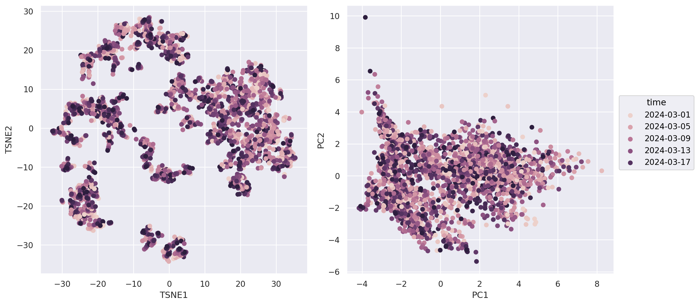

Part 2 Data exploration by unsupervised learning#
import warnings
warnings.simplefilter(action='ignore', category=FutureWarning) ## suppress annoying deprecation warnings
import pandas as pd
import seaborn.objects as so
import seaborn as sns
import matplotlib.pyplot as plt
from matplotlib import style
from sklearn.preprocessing import StandardScaler
from sklearn.manifold import TSNE
from sklearn.decomposition import PCA
from sklearn.preprocessing import StandardScaler
from sklearn.cluster import KMeans
# Renaming columns for better axis labels in plots
col_rename = {
'tavg': 'Temp_Avg_°C',
'tmax': 'Temp_Max_°C',
'tmin': 'Temp_Min_°C',
'rhum': 'Rel_Humidity_%',
'coco': 'Condition',
'wspd': 'Wind_Speed_kmh',
'prcp': 'Precipation_mm',
'wdir': 'Wind_Direction_°',
'pres': 'Air_pressure_hPa',
'dwpt': 'Dew_point_°C'
}
## Reload data
weather_df = pd.read_csv('global_weather.csv', parse_dates=['time'], dtype={'wmo':str, 'station':str})
weather_df = weather_df.dropna()
weather_df.rename(columns=col_rename, inplace=True)
weather_df = weather_df.assign(Continent = weather_df["timezone"].str.split('/').str[0]) ## Get continent from timezone column
Dimension reduction by PCA and t-SNE#
weather_df.select_dtypes(include='number') ## Only on numerical attributes of weather data
| latitude | longitude | elevation | Dew_point_°C | Rel_Humidity_% | Temp_Avg_°C | Temp_Min_°C | Temp_Max_°C | Precipation_mm | Wind_Direction_° | Wind_Speed_kmh | Air_pressure_hPa | |
|---|---|---|---|---|---|---|---|---|---|---|---|---|
| 0 | 34.0167 | 71.5833 | 359.0 | 11.0 | 100.0 | 12.3 | 9.6 | 13.0 | 5.1 | 334.0 | 7.3 | 1015.4 |
| 1 | 34.0167 | 71.5833 | 359.0 | 10.0 | 100.0 | 10.8 | 9.0 | 12.5 | 65.0 | 12.0 | 11.7 | 1005.5 |
| 2 | 34.0167 | 71.5833 | 359.0 | 5.0 | 94.0 | 8.9 | 5.5 | 13.0 | 16.0 | 330.0 | 20.4 | 1012.6 |
| 3 | 34.0167 | 71.5833 | 359.0 | 3.0 | 54.0 | 11.3 | 4.5 | 18.0 | 0.0 | 270.0 | 14.2 | 1020.1 |
| 4 | 34.0167 | 71.5833 | 359.0 | 1.9 | 50.0 | 13.7 | 5.5 | 21.5 | 0.0 | 222.0 | 13.7 | 1019.3 |
| ... | ... | ... | ... | ... | ... | ... | ... | ... | ... | ... | ... | ... |
| 3687 | 28.4500 | -13.8667 | 22.0 | 18.0 | 78.0 | 19.9 | 16.7 | 22.0 | 0.0 | 32.0 | 12.2 | 1018.1 |
| 3688 | 28.4500 | -13.8667 | 22.0 | 15.9 | 57.0 | 23.0 | 18.8 | 28.0 | 0.0 | 0.0 | 12.5 | 1016.2 |
| 3689 | 28.4500 | -13.8667 | 22.0 | 16.9 | 73.0 | 21.9 | 20.0 | 26.0 | 0.0 | 331.0 | 27.7 | 1016.2 |
| 3690 | 28.4500 | -13.8667 | 22.0 | 16.2 | 69.0 | 20.2 | 18.0 | 23.0 | 0.0 | 19.0 | 24.9 | 1017.0 |
| 3691 | 28.4500 | -13.8667 | 22.0 | 11.1 | 47.0 | 20.2 | 17.4 | 24.0 | 0.0 | 6.0 | 29.7 | 1018.5 |
2825 rows × 12 columns
scaler = StandardScaler().set_output(transform="pandas") # Features need to be scaled for dimension reduction
#!# weather_d2_tsne = TSNE(n_components=?, perplexity=100, random_state=42).fit_transform( ## Define and perform dimension reduction
weather_d2_tsne = TSNE(n_components=2, perplexity=100, random_state=42).fit_transform( ## Define and perform dimension reduction
scaler.fit_transform(weather_df.select_dtypes(include='number')) ## Scale Data first; only numerical features can be used
)
#!# weather_d2_pca = PCA(n_components=?).fit_transform(
weather_d2_pca = PCA(n_components=2).fit_transform(
scaler.fit_transform(weather_df.select_dtypes(include='number'))
)
weather_df = weather_df.assign(TSNE1= weather_d2_tsne[:,0]) ## Add as additional columns for easy plotting
weather_df = weather_df.assign(TSNE2= weather_d2_tsne[:,1])
weather_df = weather_df.assign(PC1= weather_d2_pca[:,0])
weather_df = weather_df.assign(PC2= weather_d2_pca[:,1])
Scatter plots#
(1) simple plot with no additional information#
(
so.Plot(weather_df)
#!# .pair(x=["TSNE1","PC1"], y=["TSNE2","PC2"], cross=??) # pair as cousin of facet (sharing of axes)
.pair(x=["TSNE1","PC1"], y=["TSNE2","PC2"], cross=False) # pair as cousin of facet (sharing of axes)
.layout(size=(12, 6))
.add(so.Dot())
)
(2) After reducing to two dimension we can overlay with numerical and categorical features for exploration of potential clusters#
(
#!# so.Plot(weather_df, color=??)
so.Plot(weather_df, color="time")
.pair(x=["TSNE1","PC1"], y=["TSNE2","PC2"], cross=False)
.layout(size=(12, 6))
.add(so.Dot())
)

(3) How about atmospheric pressure?#
Interestingly, intuitive color assignment for low/high pressure seems to be reversed in US (https://as1.ftcdn.net/v2/jpg/02/74/36/92/1000_F_274369230_Kvnl7UddxtOPCV0CDMwX6I0y6m1GezDo.jpg) compared to Germany (https://bluewhale.ch/wp-content/uploads/2020/02/Profi-Isobaren-Wetter-Karte.jpg)
{kind=link}
{kind=link}
(
so.Plot(weather_df, color="Air_pressure_hPa")
.pair(x=["TSNE1","PC1"], y=["TSNE2","PC2"], cross=False)
#!# .scale(color=so.Continuous(??).tick(upto=10)) ## Again important to choose an intuitive colormap.
.scale(color=so.Continuous("bwr").tick(upto=10)) ## Again important to choose an intuitive colormap.
.layout(size=(12, 6))
.add(so.Dot())
.theme({**style.library["dark_background"]}) ## If midpoint is white, a dark background is desirable
)
Tackling the overplotting issue in scatter plots#
Strategies:
smaller markers
transparency to show density
marker edges
(
so.Plot(weather_df, x="TSNE1", y="TSNE2", color="Temp_Avg_°C")
#!# .add(so.Dot(alpha=??, pointsize=??, edgecolor="black")) # adjusting pointsize, introduce transparency, edges increase visibility (dark, bright)
.add(so.Dot(alpha=0.3, pointsize=4, edgecolor="black")) # adjusting pointsize, introduce transparency, edges increase visibility (dark, bright)
.scale(color=so.Continuous("Spectral_r").tick(upto=7)) # reverse
.layout(size=(6, 6))
)

Avoid overplotting by facet subgroups#
(
so.Plot(weather_df, x="TSNE1", y="TSNE2", color="Rel_Humidity_%")
# .facet(??, wrap=4).layout(size=(18, 8))
.facet("Continent", wrap=4).layout(size=(18, 8))
.add(so.Dot(alpha=0.3, pointsize=4, edgecolor="black"))
.scale(color="cividis_r")
)
Alternative: 2D density and histogram plots (unfortunately not available via seaborn.object API)#
f, axes = plt.subplots(2,4, figsize=(18, 6), sharex=True, sharey=True)
sns.scatterplot(data=weather_df ,x="TSNE1", y="TSNE2", ax=axes[0,0], alpha=0.05) ## Scatter plot with very low alpha
sns.histplot(data=weather_df ,x="TSNE1", y="TSNE2", ax=axes[0,1]) ## Tiles showing density (low resolution)
sns.kdeplot(data=weather_df ,x="TSNE1", y="TSNE2", ax=axes[0,2]) ## Isoclines of density (high resolution)
#!# sns.kdeplot(data=weather_df ,x="TSNE1", y="TSNE2", ax=axes[0,3], fill=True, thresh=0, levels=??, cmap="Blues",) ## Filled density (high resolution)
sns.kdeplot(data=weather_df ,x="TSNE1", y="TSNE2", ax=axes[0,3], fill=True, thresh=0, levels=10, cmap="Blues",) ## Filled density (high resolution)
## try out high number of levels -> what is maximum number you can discriminate before blurring out?
## For a single continent for comparison
sns.scatterplot(data=weather_df.where(weather_df['Continent'] == "Europe") ,x="TSNE1", y="TSNE2", ax=axes[1,0], alpha=0.05)
sns.histplot(data=weather_df.where(weather_df['Continent'] == "Europe") ,x="TSNE1", y="TSNE2", ax=axes[1,1])
sns.kdeplot(data=weather_df.where(weather_df['Continent'] == "Europe") ,x="TSNE1", y="TSNE2", ax=axes[1,2])
sns.kdeplot(data=weather_df.where(weather_df['Continent'] == "Europe") ,x="TSNE1", y="TSNE2", ax=axes[1,3], fill=True, thresh=0, levels=10, cmap="Blues")
<Axes: xlabel='TSNE1', ylabel='TSNE2'>
Analysis of clusters#
clustering = KMeans(n_clusters=8, random_state=42).fit(
#!# clustering = KMeans(n_clusters=??, random_state=42).fit(
StandardScaler().fit_transform(
weather_d2_tsne
)
)
clustering.labels_
array([0, 3, 0, ..., 2, 7, 7], dtype=int32)
weather_df = weather_df.assign(Cluster= [str(x) for x in clustering.labels_]) ## Add Cluster labels to dataframe for plotting
(
so.Plot(weather_df, x="TSNE1", y="TSNE2", color="Cluster", marker="Continent") # Try out visualize cluster assignment by color and marker
.add(so.Dot(alpha=0.8, pointsize=6, edgecolor="black"))
.scale(color="pastel") # Important to use a colormap for categorical data
)
Let’s have a look on Cluster if it is enriched with European cities#
(
so.Plot(weather_df.loc[weather_df["Cluster"]== "0",:], x="TSNE1", y="TSNE2", color="Continent") # try marker and color
#!# so.Plot(weather_df.loc[weather_df["Cluster"]== "0",:], x="TSNE1", y="TSNE2", ??="Continent") # try marker and color
.add(so.Dot(alpha=0.5, pointsize=10, edgecolor="black"))
.scale(color="Set2")
)